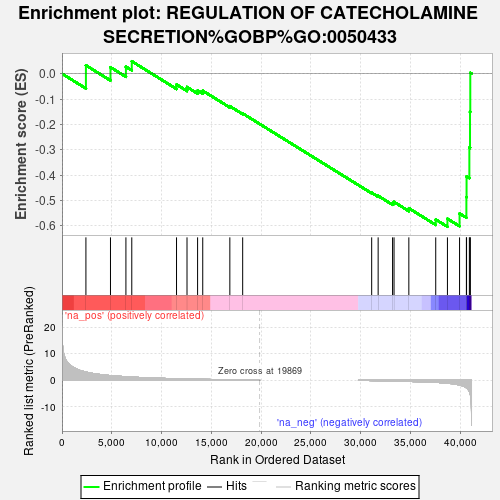
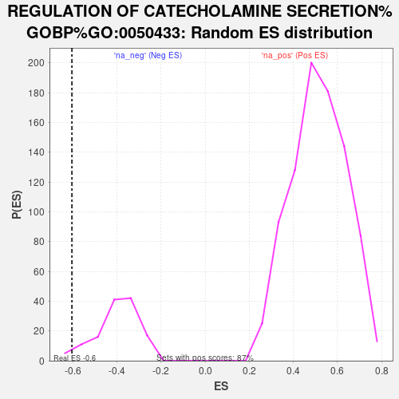

| | | Dataset | DS_vs_CTR_ranked_genelist |
| Phenotype | NoPhenotypeAvailable |
| Upregulated in class | na_neg |
| GeneSet | REGULATION OF CATECHOLAMINE SECRETION%GOBP%GO:0050433 |
| Enrichment Score (ES) | -0.6039117 |
| Normalized Enrichment Score (NES) | -1.5158716 |
| Nominal p-value | 0.030303031 |
| FDR q-value | 0.22047053 |
| FWER p-Value | 1.0 |
Table: GSEA Results Summary

Fig 1: Enrichment plot: REGULATION OF CATECHOLAMINE SECRETION%GOBP%GO:0050433
Profile of the Running ES Score & Positions of GeneSet Members on the Rank Ordered List
| SYMBOL | RANK IN GENE LIST | RANK METRIC SCORE | RUNNING ES | CORE ENRICHMENT | | 1 | ADRA2A | 2401 | 3.099 | 0.0329 | No |
| 2 | DTNBP1 | 4867 | 1.777 | 0.0253 | No |
| 3 | ADRA2B | 6417 | 1.351 | 0.0274 | No |
| 4 | GRK2 | 7006 | 1.214 | 0.0489 | No |
| 5 | SNCA | 11499 | 0.596 | -0.0428 | No |
| 6 | SYT4 | 12551 | 0.532 | -0.0527 | No |
| 7 | GDNF | 13614 | 0.415 | -0.0663 | No |
| 8 | FGF20 | 14131 | 0.393 | -0.0673 | No |
| 9 | ADRA2C | 16852 | 0.175 | -0.1283 | No |
| 10 | SYT11 | 18141 | 0.093 | -0.1569 | No |
| 11 | FFAR3 | 31093 | -0.075 | -0.4698 | No |
| 12 | PRKN | 31742 | -0.121 | -0.4821 | No |
| 13 | CHRNA6 | 33190 | -0.242 | -0.5102 | No |
| 14 | DRD2 | 33338 | -0.256 | -0.5062 | No |
| 15 | CARTPT | 34824 | -0.384 | -0.5310 | No |
| 16 | CHRNA4 | 37524 | -0.724 | -0.5753 | Yes |
| 17 | DRD3 | 38699 | -1.071 | -0.5724 | Yes |
| 18 | KCNA2 | 39917 | -1.705 | -0.5517 | Yes |
| 19 | CHRNB2 | 40602 | -2.749 | -0.4873 | Yes |
| 20 | KCNB1 | 40620 | -2.797 | -0.4053 | Yes |
| 21 | STX1A | 40901 | -4.085 | -0.2917 | Yes |
| 22 | CRH | 40967 | -4.857 | -0.1501 | Yes |
| 23 | CHGA | 40994 | -5.217 | 0.0030 | Yes |
Table: GSEA details [plain text format]

Fig 2: REGULATION OF CATECHOLAMINE SECRETION%GOBP%GO:0050433: Random ES distribution
Gene set null distribution of ES for REGULATION OF CATECHOLAMINE SECRETION%GOBP%GO:0050433